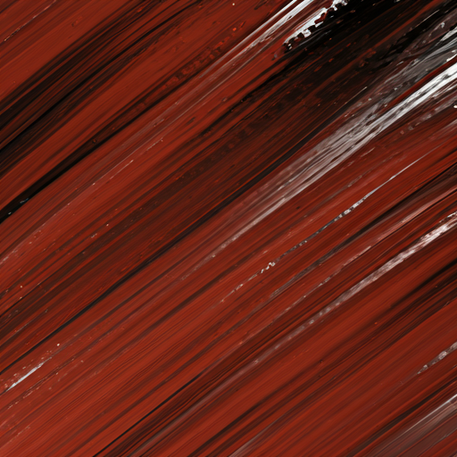
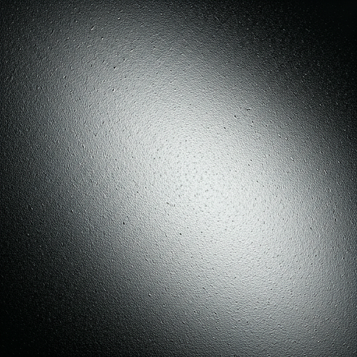
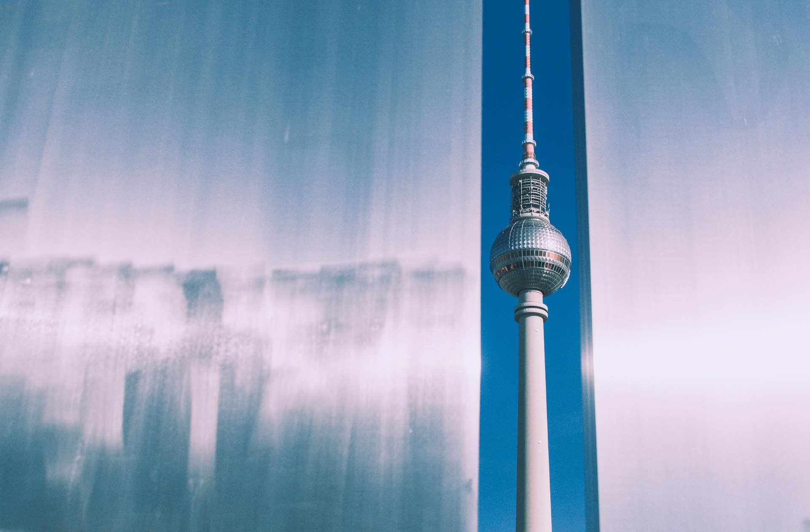
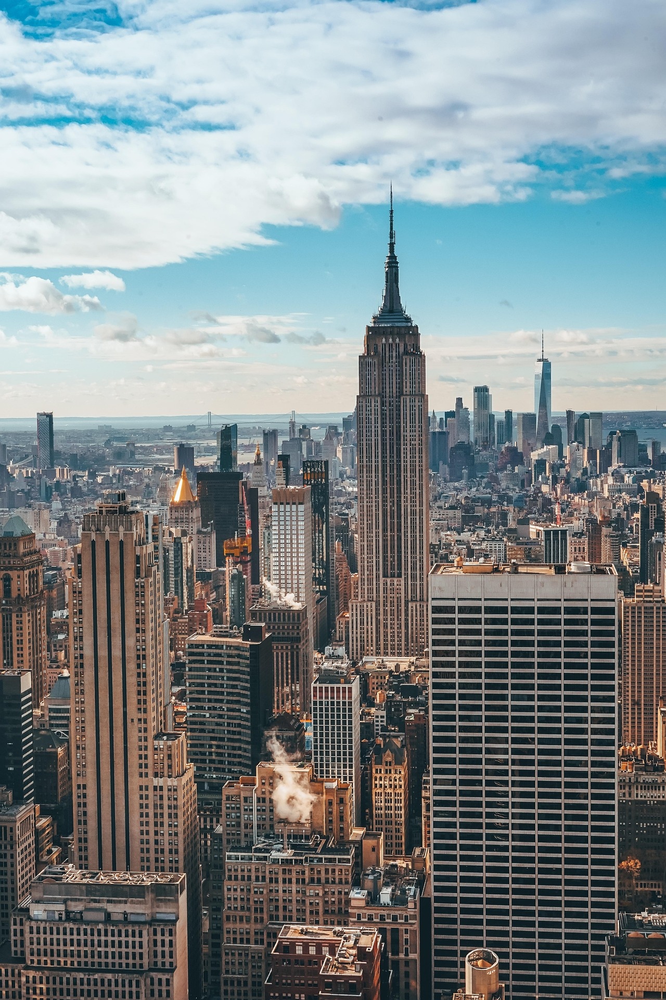
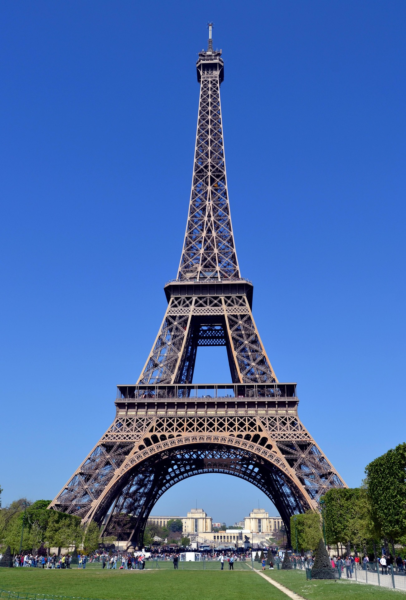
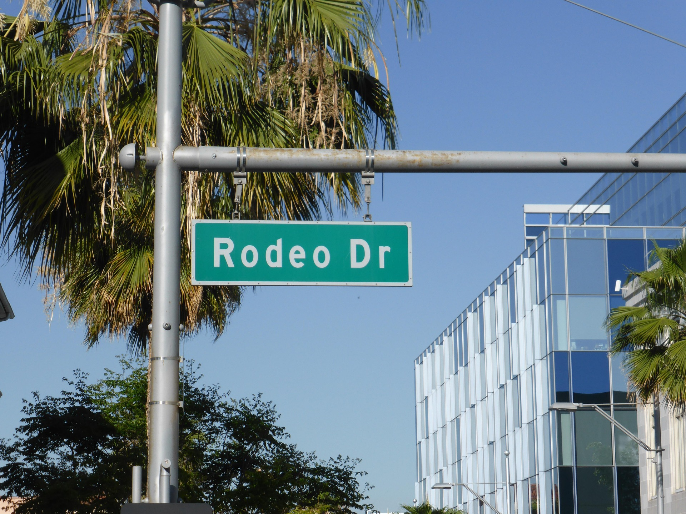

Blocking out algorithmic noise. Breaking cronyistic structures. Raw local culture.
Select your entry point
Don't just create. Be a part of the culture around you. Post. Connect. Exhibit. Sell.
Curate the chaos. Put your venue on the map. Find artists. Be visible. Collaborate.
Own the narrative. Experience local culture. Discover exhibitions. Support creatives.
Being visible in the creative industry is hard. Getting into galleries is more about connections than talent and stories. Independent artists often are left with one option: Social media - a noise machine. Too much talent is lost in algorithms, while local culture fades away.
ArtFinder strives for a solution. A raw archive, unbiased network and free marketplace of local creativity. A timeless place for culture to thrive. For artists to share, and sell their work, without gatekeepers or trends. To connect with their local scene. For organizers to present exhibitions. To allow meaningful opportunities, connecting artists and audiences. For art lovers to discover and support the scene around them.
// NO ALGORITHMS. ONLY ARCHIVE.

Discover geographic art clusters that are actually happening.



